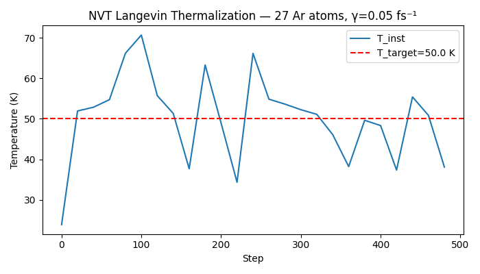

Note
Go to the end to download the full example code.
Canonical (NVT) Molecular Dynamics with Langevin Thermostat#
The NVT ensemble (constant Number of atoms, Volume, and Temperature) samples the canonical distribution. A thermostat couples the system to a heat bath, injecting or removing kinetic energy to maintain the target temperature.
NVTLangevin implements the BAOAB Langevin
splitting scheme, which has favourable configurational accuracy properties
compared to other Langevin splittings at the same timestep
(Leimkuhler & Matthews 2013). The Langevin equation adds a friction
term and a random force to Newton’s equations:
m·a = F_conservative − γ·m·v + √(2·γ·m·kT) · ξ(t)
where γ is the friction coefficient (1/time) and ξ is Gaussian white noise. Larger γ couples more strongly to the bath (faster thermalization, shorter correlation times); smaller γ gives more NVE-like dynamics.
This example:
Builds a small argon cluster (no periodic boundaries) on a slightly expanded simple-cubic lattice so atoms start near their equilibrium separations. A cold start at ≈ 5 K lets the thermostat visibly supply energy to reach the 50 K target.
Runs 500 NVT steps at a target of 50 K, showing the system thermalize.
Computes the instantaneous temperature from velocities after the run.
Demonstrates the
"custom"backend ofLoggingHookby routing each logged row tologuru.logger.info.Optionally plots temperature vs step (set
NVALCHEMI_PLOT=1).
Note
Periodic-boundary NVE energy conservation is demonstrated in
04_nve_energy_conservation.py. This example intentionally omits
pbc and WrapPeriodicHook to keep
the focus on Langevin thermalization rather than periodic geometry.
from __future__ import annotations
import os
import torch
from loguru import logger
from nvalchemi.data import AtomicData, Batch
from nvalchemi.dynamics import NVTLangevin
from nvalchemi.dynamics.hooks import LoggingHook, NeighborListHook
from nvalchemi.models.lj import LennardJonesModelWrapper
LJ model and argon cluster#
Same Lennard-Jones argon parameters as the previous examples. We build a 3×3×3 argon cluster (no periodic boundaries) on a slightly expanded simple-cubic lattice. Spacing at 1.1×r_min keeps each atom close to its pair equilibrium while leaving enough room for the cluster to breathe.
A simple-cubic lattice under LJ forces is mechanically unstable (the thermodynamically stable Ar crystal is FCC). Omitting periodic boundaries avoids the rapid lattice disordering that would overwhelm the thermostat in a periodic-SC setup. The WrapPeriodicHook and periodic-cell NVE are demonstrated in the preceding example (04_nve_energy_conservation.py).
Atoms start almost at rest (cold start at T ≈ 5 K) so the thermostat has to supply energy to bring the system up to the 50 K target.
LJ_EPSILON = 0.0104 # eV
LJ_SIGMA = 3.40 # Å
LJ_CUTOFF = 8.5 # Å
MAX_NEIGHBORS = 32
model = LennardJonesModelWrapper(
epsilon=LJ_EPSILON,
sigma=LJ_SIGMA,
cutoff=LJ_CUTOFF,
max_neighbors=MAX_NEIGHBORS,
)
N_SIDE = 3
T_TARGET = 50.0 # K — target thermostat temperature
T_START = 5.0 # K — cold start
KB_EV = 8.617333262e-5 # eV/K
M_AR = 39.948 # amu
_R_MIN = 2 ** (1 / 6) * LJ_SIGMA # ≈ 3.82 Å
spacing = 1.1 * _R_MIN # slightly expanded — stable cluster starting point
coords = torch.arange(N_SIDE, dtype=torch.float32) * spacing
gx, gy, gz = torch.meshgrid(coords, coords, coords, indexing="ij")
positions = torch.stack([gx.flatten(), gy.flatten(), gz.flatten()], dim=-1)
n_atoms = positions.shape[0]
# Cold start: sample from Maxwell-Boltzmann at T_START (well below target)
torch.manual_seed(7)
kT_start = KB_EV * T_START
v_scale_start = (kT_start / M_AR) ** 0.5 # sqrt(eV/amu)
velocities = torch.randn(n_atoms, 3) * v_scale_start
velocities -= velocities.mean(dim=0, keepdim=True) # zero COM velocity
data = AtomicData(
positions=positions,
atomic_numbers=torch.full((n_atoms,), 18, dtype=torch.long),
forces=torch.zeros(n_atoms, 3),
energies=torch.zeros(1, 1),
)
data.add_node_property("velocities", velocities)
batch = Batch.from_data_list([data])
print(
f"System: {n_atoms} Ar atoms (cluster, no PBC), spacing={spacing:.2f} Å, "
f"T_start≈{T_START} K → T_target={T_TARGET} K"
)
System: 27 Ar atoms (cluster, no PBC), spacing=4.20 Å, T_start≈5.0 K → T_target=50.0 K
NVTLangevin integrator and hooks#
Key NVTLangevin arguments:
dt— timestep in fs. 0.5 fs keeps the integration stable for LJ argon across the broad force range encountered during thermalization.temperature— target temperature in Kelvinfriction— Langevin friction γ in 1/fs. Here γ = 0.5 fs⁻¹ gives strong coupling to the heat bath: the thermostat velocity-correlation timescale is 1/γ = 2 fs (4 steps at dt=0.5 fs), so the cold cluster heats to the 50 K target within the first few tens of steps. A weaker γ (e.g. 0.05 fs⁻¹) gives more NVE-like dynamics with longer correlation times but requires more steps to thermalize a cold start.random_seed— reproducible stochastic forces
LoggingHook supports a "custom"
backend that calls a user-supplied writer_fn(step, rows) on a
background thread — the same async machinery used by the CSV backend.
Here we route each row to loguru.logger.info, which lets users plug
in any loguru sink (rotating files, structured JSON, remote services, …).
The writer_fn is called with:
step— the current step count (int)rows— a list of dicts, one per graph, with keysstep,graph_idx,status,energy,fmax,temperature
We also accumulate temperature into _temp_history for the optional
plot, since the custom backend does not write a file.
_temp_history: list[tuple[int, float]] = []
def _loguru_writer(step: int, rows: list[dict]) -> None:
"""Forward per-graph scalars to loguru and record temperature."""
for row in rows:
logger.info(
"step={step} E={energy:.5f} eV T={temperature:.1f} K fmax={fmax:.4f} eV/Å",
**row,
)
if "temperature" in row:
_temp_history.append((int(row["step"]), float(row["temperature"])))
nvt = NVTLangevin(
model=model,
dt=0.5,
temperature=T_TARGET,
friction=0.5,
random_seed=42,
n_steps=500,
)
nvt.register_hook(NeighborListHook(model.model_card.neighbor_config))
with LoggingHook(backend="custom", writer_fn=_loguru_writer, frequency=20) as log_hook:
nvt.register_hook(log_hook)
# Running NVT MD
# ---------------
# The Langevin thermostat injects energy into the cold cluster during the
# first ~20 steps (at dt=0.5 fs, that is ~10 fs = 1/γ). After that the
# temperature fluctuates around the 50 K target. The friction coefficient
# γ = 0.5 fs⁻¹ gives strong thermostat coupling: the velocity-correlation
# timescale is just 2 fs, so the thermostat dominates over the conservative
# forces on sub-femtosecond timescales.
print(f"\nRunning {nvt.n_steps} NVT steps at T={T_TARGET} K ...")
batch = nvt.run(batch)
print(f"NVT completed {nvt.step_count} steps.")
Running 500 NVT steps at T=50.0 K ...
NVT completed 500 steps.
Inspecting temperature#
The instantaneous kinetic temperature is computed from the equipartition theorem:
T = (2 · KE) / (3 · N · kB)
where \(\mathrm{KE} = 0.5 \sum_i m_i \|v_i\|^2\) in eV directly. After 500 steps the temperature should be close to the 50 K target (within statistical fluctuations of order ΔT ~ T/sqrt(N)).
masses = batch.atomic_masses # (N,) amu
vels = batch.velocities # (N, 3) sqrt(eV/amu)
# KE = 0.5 * m[amu] * v²[eV/amu] — result is directly in eV
ke_ev = 0.5 * (masses * (vels**2).sum(dim=-1)).sum().item()
T_final = (2.0 * ke_ev) / (3.0 * n_atoms * KB_EV)
print(f"\nFinal instantaneous temperature: {T_final:.2f} K (target: {T_TARGET} K)")
print(f"Final KE: {ke_ev:.6f} eV ({ke_ev / n_atoms:.6f} eV/atom)")
Final instantaneous temperature: 51.33 K (target: 50.0 K)
Final KE: 0.179142 eV (0.006635 eV/atom)
Optional plot — temperature vs step#
Set NVALCHEMI_PLOT=1 to plot the temperature history accumulated by
_loguru_writer during the run.
if os.getenv("NVALCHEMI_PLOT", "0") == "1" and _temp_history:
import matplotlib.pyplot as plt
steps_plot = [r[0] for r in _temp_history]
temps_plot = [r[1] for r in _temp_history]
fig, ax = plt.subplots(figsize=(7, 4))
ax.plot(steps_plot, temps_plot, lw=1.5, label="T_inst")
ax.axhline(T_TARGET, ls="--", color="red", label=f"T_target={T_TARGET} K")
ax.set_xlabel("Step")
ax.set_ylabel("Temperature (K)")
ax.set_title(f"NVT Langevin Thermalization — {n_atoms} Ar atoms, γ=0.05 fs⁻¹")
ax.legend()
fig.tight_layout()
plt.savefig("nvt_temperature.png", dpi=150)
print("Saved nvt_temperature.png")
plt.show()

Saved nvt_temperature.png
Total running time of the script: (0 minutes 0.866 seconds)